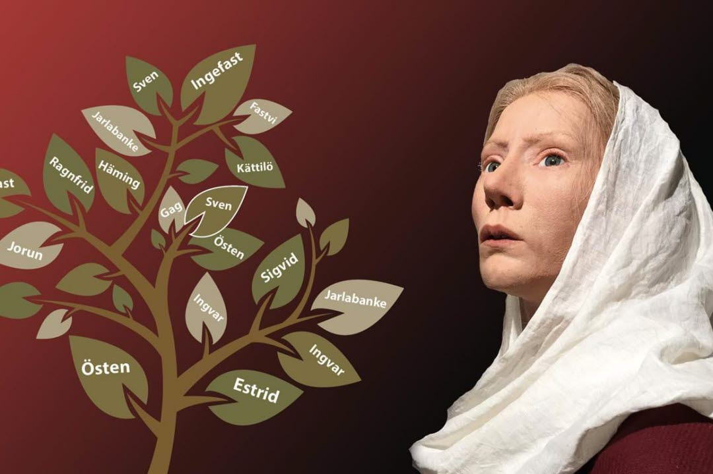
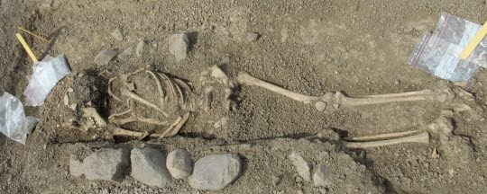

Broby bro
Vid eller i närheten av Broby bro står sex runstenar. Tre av dem, en hel sten och två fragment, står på en liten ås vid en p-plats strax intill bron. Tre andra stenar, som tidigare stått vid bron, har måst flyttas till en hage 150 meter ned längs ån. Fyra av stenarna kan genom inskrifterna knytas till stormannen Jarlabankes släkt. Jarlabankes farmor Estrid nämns på två av stenarna vid Broby bro. På en av dem heter det: "Estrid lät resa dessa stenar efter Östen, sin man, som drog till Jerusalem och dog borta i Grekland."

På pilgrimsfärd
Runstenen är troligen rest någon gång mellan 1030 och 1050. Östen, och kanske också Estrid själv, hade givit sig iväg på pilgrimsfärd till Kristi grav men Östen hade aldrig återvänt.
Genom en annan runsten vet vi att Estrid föddes på Snåttsta i nuvarande Vallentuna kommun. Genom runinskrifterna kan vi säga att hon levde omkring 1020-1080. Olof skötkonung, Sveriges förste kristne kung, började regera omkring 995 och hans drottning hette Estrid som var en furstedotter från det västslaviska riket Mecklenburg vid södra östersjökusten. Kanske döptes Estrid på Snåttsta efter henne?
Med Östen fick Estrid barnen Gag, Ingefast och Östen. Gag dog ung och Östen och Estrid reste sin första runsten efter honom. Efter en tid som änka gifte Estrid om sig med Ingvar i Harg. Med honom fick hon tre söner. När också Ingvar dog återvände Estrid till Täbybygden och levde tillsammans med sina barn och barnbarn där.
Estrids grav
Vid en arkeologisk utgrävning vid Broby bro 1995 påträffades omedelbart norr och öster om bron en grav som sannolikt är Estrids. Hennes skelett var välbevarat och en undersökning visade att hon på sin ålders höst blivit krum och fått inflammation i tänderna. Vid något tillfälle hade hon ramlat så olyckligt att hon brutit armen. Hon var lagd i en kista, gjord av en urholkad stock, och låg på kristet vis med huvudet i väster.

Med kristendomen upphörde sederna att bränna de döda och att lägga med olika slags föremål i graven. Men ibland upptäcker arkeologer att man av någon anledning gjort undantag från de nya reglerna. De föremål som Estrids efterlevande lät följa henne i graven kan därför ha haft en mycket stark symbolisk betydelse för släkten.
Mynt och vikter
I Estrids grav låg ett ca 20 x 10 cm stort skrin, snickrat i lind, med lås och nyckel. Inne i skrinet låg två silvermynt och tre vikter, föremål som symboliserar hennes välbärgade släkt. Ett av mynten gick att identifiera. Det hade präglats i Basel i nuvarande Schweiz någon gång mellan 1025 och 1040 e. Kr. I skrinet fanns också en liten silverring som använts att stänga till en tygpåse med. Bredvid skrinet låg en kniv.
Intill Estrids grav påträffades en barngrav som tidigare har tolkats som Östens och Estrids första avlidne son, Gag. En DNA-analys har avfärdat den möjligheten.